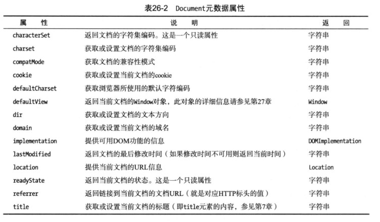

HTML-DOM教程
Category:
DOM
发表:
更新:
DOM是W3C的标准，是与语言无关的通用的用于操作文档的一种技术规范。
简介
使用Document元数据
Document对象的用途之一是向你提供关于文档的信息。下表介绍了你可以用来获取文档元数据的属性。

获取文档信息
123456789101112131415161718192021<html><head><meta charset="UTF-8"><title></title></head><body><script type="text/javascript">document.writeln("<pre>");document.writeln("characterSet:"+document.characterSet); //只读document.writeln("charset:"+document.charset); //读取document.writeln("compatMode:"+document.compatMode);document.writeln("defaultCharset:"+document.defaultCharset);document.writeln("domain:"+document.domain);document.writeln("referrer:"+document.referrer);document.writeln("lastModified:"+document.lastModified);document.writeln("cookie:"+document.cookie);document.writeln("</pre>");</script></body></html>理解怪异模式
compatMode属性告诉你浏览器是如何处理文档内容的。现如今存在着大量的非标准HTML，浏览器则试图显示这类网页，哪怕它们并不遵循HTML规范。一些这样的内容依赖于浏览器的特殊功能，而这些功能来源于浏览器依靠自身特点（而非遵循标准）进行竞争的年代。compatMode属性会返回两个值中的一个。使用Location对象
测试表格缩进
| 值 | 说明 |
| ———- | —- |
| CSS1Compat | 此文档遵循某个有效的HTML规范（不必是HTML5规范） |
| BackCompat | 此文档含有非标准功能，已触发怪异模式 |